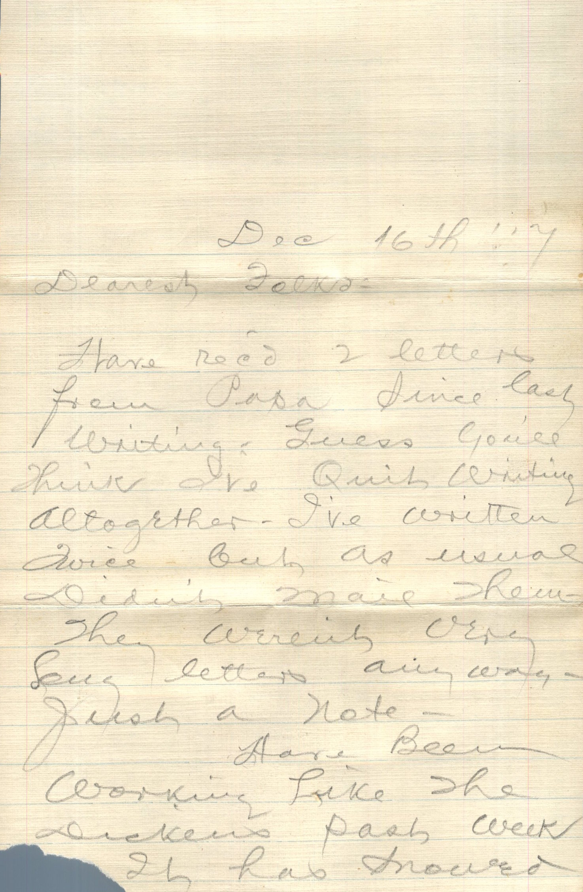
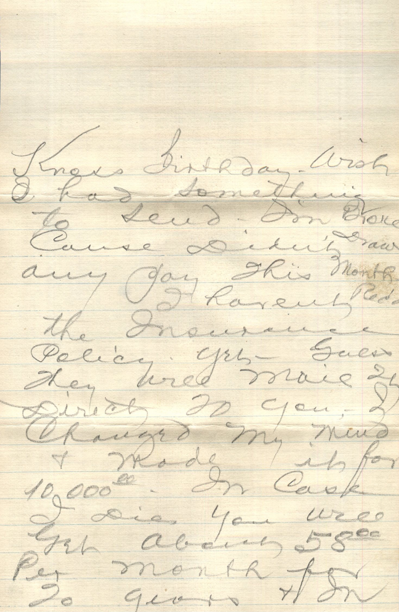
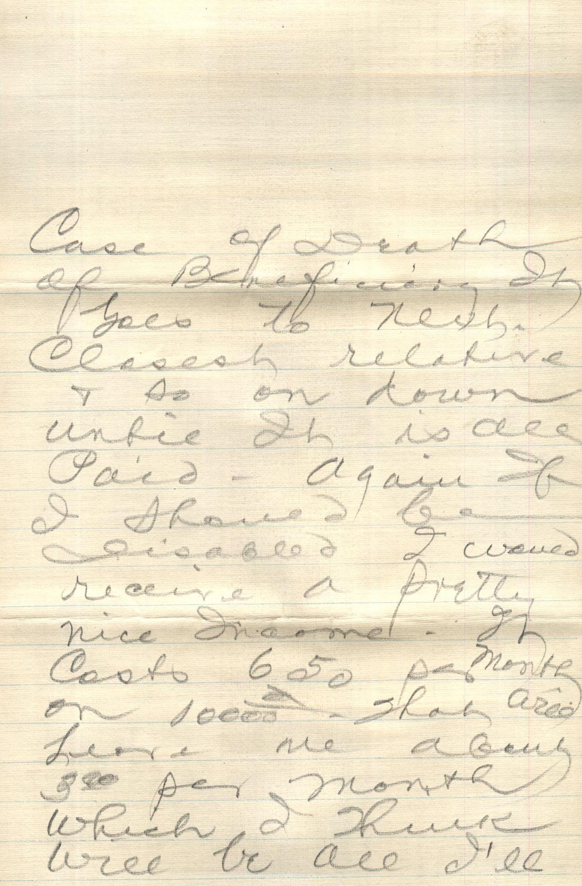
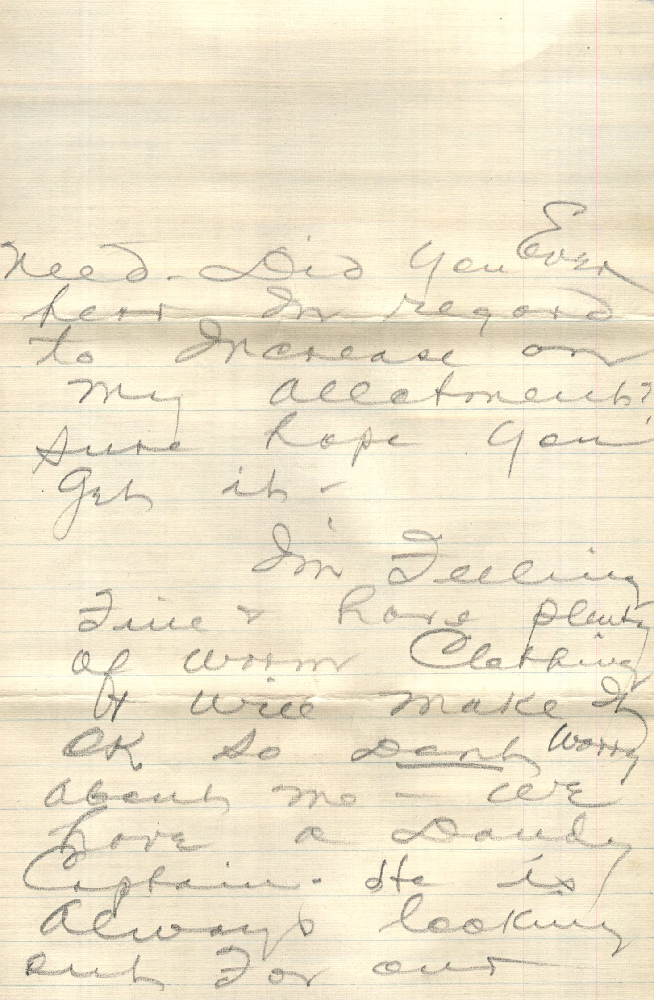
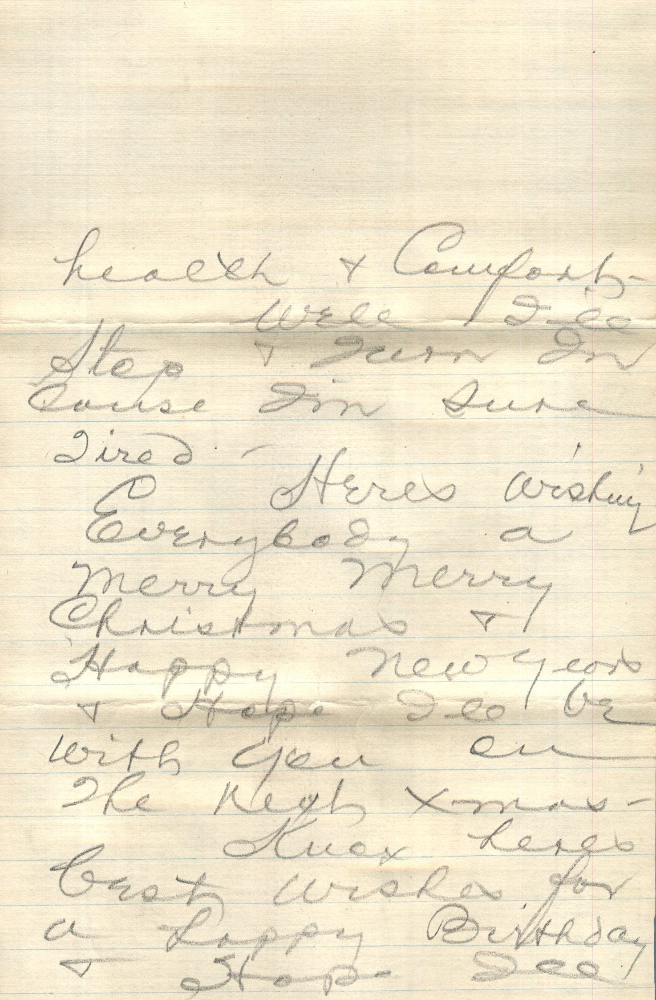
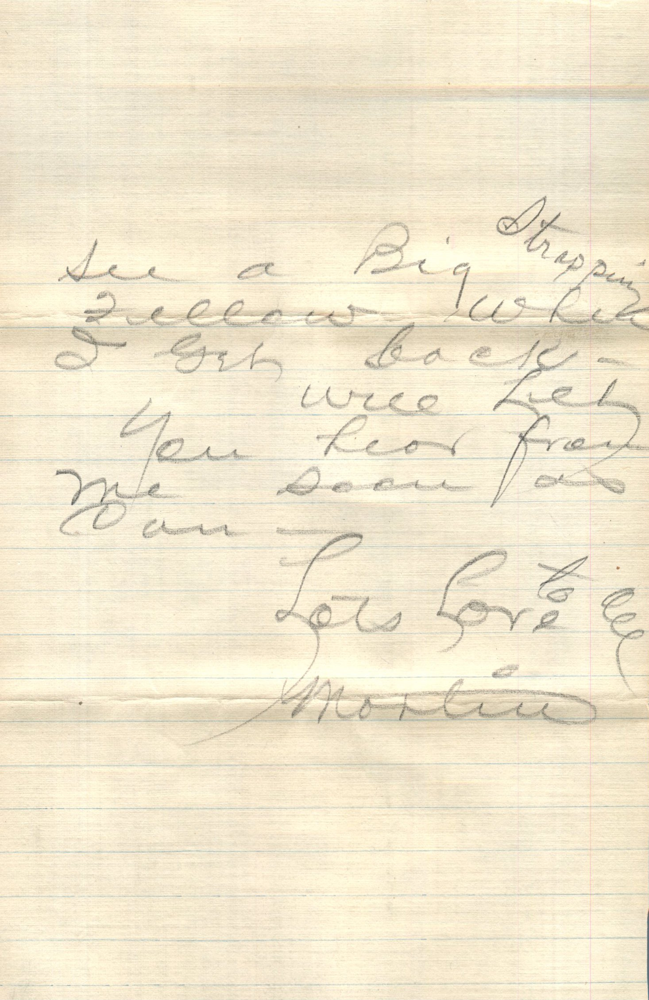

From: Martin Chandler, To: Elijah H. Chandler and Family
Mailed From: New Jersey on December 17, 1917
Mr. E.H. Chandler
Pearl, Ill
Pike County
Dec 16th, '17
Dearest Folks,
Have received 2 letters from Papa since last writing. Guess you'll think I've quit writing altogether. I've written twice. But as usual didn't mail them. They weren't very long letters anyway. Just a note.
Have been working like the dickens past week. It has snowed every day. Now 8:30 pm and we just got through loading our combat wagons, trucks, motorcycles, and other boxes and will load the horses tomorrow and leave Tuesday for sure so you needn't write me anymore until you hear from me again. Needn't mention to anyone that we have gone.
Will write you as often as possible from over there but don't expect any descriptions of country, etc cause it isn't allowed.
Got letter from Chas Morgan at St. Louis other day. It was in the dead letter office for some time account he didn't put my organization on envelope. Will enclose it. Today is Knox's birthday. Wish I had something to send. I'm broke cause didn't draw any pay this month.
I haven't read the insurance policy yet. Guess they will mail it direct to you. I changed my mind and made it for $10,000.00 in case I did you will get about $58.00 per month for 20 years and in case of death of beneficiary it goes to next closest relative and sundown until it is all paid. Again if I should be disabled I would receive a pretty nice income. It goes $6.50 per month on $10,000.00. That will leave me about 3.00 per month which I think will be all I'll need. Did you ever hear in regard to increase on my allotment? Sure hope you get it.
I'm feeling fine and have plenty of warm clothing and will make it OK so don't worry about me. We have a dandy Captain. He is always looking out for our health and comfort.
Well I'll stop and turn in cause I'm sure tired.
Here's wishing everybody a merry merry Christmas and Happy New Years and hope I'll be with you on the next Xmas.
Knox here's best wishes for a happy birthday and hope I'll see a big strapping fellow when I get back.
Will let you hear from me soon as can.
Lots love to all,
Martin
Letter Enclosed:


St. Louis, MO.
Antlers Hotel
18 & Olive Sts.
November 25, 1917
Mr. Martin Chandler
Camp Vail, N.J.
Dear Martin,
I have been reading your letters to the Tribune and have been much impressed by them and could constrain myself no longer from writing you a few lines of commendation. I am much gratified to know that some of the Pearl boys are "doing their bit," and a little more. I have, however, not much to say for myself, as I am not in active military service, but, believe me I do my share of moral support, such as proclaiming my american spirit, buying liberty bonds, etc. I did however, apply for Army Officers Reserve, but was unfortunate in that, a german letter carrier failed to deliver my first appointment in time (he is now out of service, you may be assured), the second comp you know, demanded a higher standard of men. Consequently, I did not make it. I was too young and had no military service.
As I am already in one branch of government service and have been attending a university here the past to years, I have hesitated to join as a private, I shall when I am really needed.
Well, Martin, I have used much ink in weakly justifying myself for not being in active service, but I am firmly convinced that every able bodied young man who is not in military, should have reasons as good or even better than I have.
There are many Germans in St. Louis, which affords many opportunities for one to express his patriotism.
I heard that your sisters were down here some time back, but I did not get to see them. I rarely see any one from Pearl. My brother Ray is staying with me now.
I hope you have an excellent Thanksgiving. I am sure I shall have.
We, university students have a big turkey supper on Wednesday, then a big "pep" parade! Shirt-tails out, etc. Big football game between our school and St. Louis University Thursday. I shall be there. I still feel like a high-school boy of 18, even thought I am over 25 but that is not old for University. Martin there is nothing better than school days, that is one reason I am having so many of them.
I suppose you know Martin Schlepper and his sister. They are here. Martin is out with us (at the Washington U.) and his sister is going to Brown's Business College. Fine boy is Martin.
Well Martin if you find a moment to spare when writing to your friend, let me have a line or so.
Wishing you rapid promotion, and the very best of luck, I am ever,
Your Friend
Morgan, Chas E.

 From: Grover C. Hoover, To: Jeanette Knox Chandler
Mailed From: Girard, Ohio on December 13, 1917
From: Grover C. Hoover, To: Jeanette Knox Chandler
Mailed From: Girard, Ohio on December 13, 1917


{kind=link}
{kind=link}
{kind=link}
{kind=link}
{kind=link}
{kind=link}